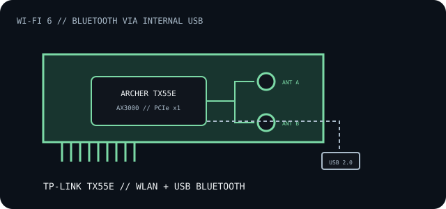

[ INDIVIDUAL COMPONENT // EXPANSION CARDS ]
TP-Link Archer TX55E
AX3000 Wi-Fi 6 PCI Express adapter with dual-band WLAN and a Bluetooth radio. Bluetooth uses a separate motherboard USB header connection.

IDENTIFICATION: TX55E revisions and regional bundles may ship with different wireless modules or Bluetooth versions. Use the precise hardware version and official matching datasheet/driver; do not treat the model family as a fixed module revision.
Specifications and compatibility
| Exact model | TP-Link Archer TX55E AX3000 Wi-Fi 6 Bluetooth PCI Express Adapter. |
|---|---|
| Controller / radio | TP-Link product materials describe a 2x2 Intel Wi-Fi 6 radio; exact module and Bluetooth controller depend on hardware revision. |
| Bus / host interface | PCI Express x1 for WLAN; a separate internal USB 2.0 header lead is needed for Bluetooth functionality. |
| Wireless standards / rates | 5 GHz 802.11ax/ac/n/a up to 2402 Mb/s and 2.4 GHz 802.11ax/n/g/b up to 574 Mb/s, subject to compatible AP/channel width and radio conditions. |
| Ports / connectors | Two external dual-band antenna terminals, plus an internal USB header cable for Bluetooth. No wired Ethernet port. |
| OS / driver compatibility | TP-Link publishes Windows 10/11 64-bit packages for supported revisions. Wi-Fi and Bluetooth may require separate drivers; verify the download page for the installed hardware version. |
| Revision / host caveat | Check TX55E hardware revision, module markings, Bluetooth lead/header availability, bracket, UEFI/OS driver support and board clearance. The Wi-Fi function may work while Bluetooth remains unavailable if the USB lead is omitted. |
Installation and archival notes
- Seat the card in a PCIe x1 slot, connect the Bluetooth USB cable to the correct motherboard header and attach both antennas before use.
- Install the TP-Link revision-specific WLAN and Bluetooth driver packages; retain their versions with the system record.
- AX features require a compatible access point and client configuration; published wireless rates are theoretical PHY maxima.
Manufacturer specifications and documentation
- TP-Link — Archer TX55E product overviewWi-Fi 6 link rates, Bluetooth and card feature description.
- TP-Link — Archer TX55E downloads and manualsRevision-specific drivers, user guide and quick installation documentation.
- TP-Link — Archer TX55E v4.0 datasheetRevision-scoped hardware specifications; do not generalize v4.0 details to earlier boards.